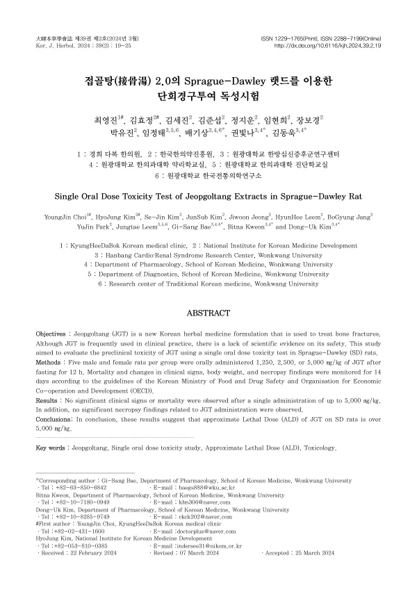

Single Oral Dose Toxicity Test of Jeopgoltang Extracts in Sprague-Dawley Rat
Choi Y, Kim H, Kim SJ, Kim J, Jeong J, Leem H, Jang B, Park Y, Leem J, Bae GS, Kweon B, Kim DU
The Korea Journal of Herbology 39(2):19-25

첫 장 · 오픈액세스First page · open access
논문 소개Summary
접골탕은 골절 치료에 쓰이는 한약 처방인데 임상에서 자주 쓰이면서도 안전성에 관한 과학적 근거가 부족했습니다. 이 연구는 랫드를 이용한 단회 경구투여 독성시험입니다. 12시간 절식 뒤 암수 각 다섯 마리씩에게 킬로그램당 1,250·2,500·5,000밀리그램을 한 차례 투여하고 식품의약품안전처와 경제협력개발기구 지침에 따라 14일 동안 사망과 임상증상, 체중 변화, 부검 소견을 관찰했습니다. 5,000밀리그램까지 유의한 임상증상이나 사망이 없었고 투여와 관련된 부검 소견도 없었습니다. 저자들은 이 처방의 개략적 치사량을 킬로그램당 5,000밀리그램 이상으로 판단했습니다.
Jeopgoltang is a herbal formula used for bone fractures; frequently prescribed in practice, it nonetheless lacked scientific evidence on its safety. This study set out to fill that gap through a single oral dose toxicity test in Sprague-Dawley rats. After 12 hours of fasting, five male and five female rats per group received a single dose of 1,250, 2,500 or 5,000 mg/kg, and mortality, clinical signs, body weight changes and necropsy findings were monitored for 14 days following the guidelines of the Korean Ministry of Food and Drug Safety and the OECD. No significant clinical signs or mortality occurred up to 5,000 mg/kg, and no necropsy findings related to administration were observed. The authors judge the approximate lethal dose to be above 5,000 mg/kg.
인용Cite
Choi Y, Kim H, Kim SJ, Kim J, Jeong J, Leem H, Jang B, Park Y, Leem J, Bae GS, Kweon B, Kim DU. Single Oral Dose Toxicity Test of Jeopgoltang Extracts in Sprague-Dawley Rat. The Korea Journal of Herbology. 2024;39(2):19-25. doi:10.6116/kjh.2024.39.2.19